АЗИ (АЕЗИР)
БАЛДЕР
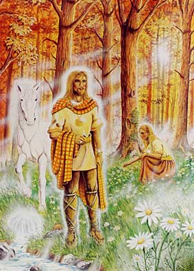
Бог на интелекта, мъдростта и пролетта. Син на Один и Фриг.
Той е един от дванадесетте главни (след Один) богове. След Рагнарок (Залезът на боговете),
той и Ход се освободили от разрушения свят на мъртвите и помогнали за построяването на новия свят.
БРАГИ
Бог на поетите. Един от дванадесетте главни богове.
Син на Один и мъж на Идун. Всеки, който искал да стане поет, трябвало да моли за покровителството му.
ВАЛИ
Един от дванадесетте главни богове. Владеел оръжието до
съвършенство и в сраженията не отстъпвал даже на Тир, но не бил особено мъдър. Той убил
Ход веднага след убийството на Балдер.
ВИДАР
Наричали го Мълчаливият Аз, тъй като не обичал да говори,
независимо, че бил много мъдър и храбър. Той бил син на Один и великанката Грид и бил почти толкова
могъщ, колкото богът на гърмотевиците Тор. Той също е един от дванадесетте главни богове.
ИДУН
 Богиня на вечната младост, жена на Браги. Тя била скромна и
тиха, но без нея азите нямало да бъдат живи. Тя имала кошница, пълна с ябълките на вечната младост,
с които угощавала боговете. Кошницата била вълшебна и никога не се изпразвала.
Богиня на вечната младост, жена на Браги. Тя била скромна и
тиха, но без нея азите нямало да бъдат живи. Тя имала кошница, пълна с ябълките на вечната младост,
с които угощавала боговете. Кошницата била вълшебна и никога не се изпразвала.
ЛОКИ
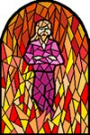
 Бог на огъня, побратим на Один. Той бил великан, смел и красив, но
много коварен. Макар и великан, азите го приели като свой и често попадали в беда заради него, но и
често ги спасявал, благодарение на находчивостта си. Той също е един от дванадесетте главни богове.
Той е вдъхновител на убийството на Балдер, заради което боговете го заточили в подземния свят. В дните
на Рагнарок (Залезът на боговете) е предводител на гигантите в битката им срещу боговете (азите). Локи
убива Хеймдал, но самият той загива от копието му.
Бог на огъня, побратим на Один. Той бил великан, смел и красив, но
много коварен. Макар и великан, азите го приели като свой и често попадали в беда заради него, но и
често ги спасявал, благодарение на находчивостта си. Той също е един от дванадесетте главни богове.
Той е вдъхновител на убийството на Балдер, заради което боговете го заточили в подземния свят. В дните
на Рагнарок (Залезът на боговете) е предводител на гигантите в битката им срещу боговете (азите). Локи
убива Хеймдал, но самият той загива от копието му.
Бог на огъня, побратим на Один. Той бил великан, смел и красив, но
много коварен. Макар и великан, азите го приели като свой и често попадали в беда заради него, но и
често ги спасявал, благодарение на находчивостта си. Той също е един от дванадесетте главни богове.
Той е вдъхновител на убийството на Балдер, заради което боговете го заточили в подземния свят. В дните
на Рагнарок (Залезът на боговете) е предводител на гигантите в битката им срещу боговете (азите). Локи
убива Хеймдал, но самият той загива от копието му.
МАГНИ и МОДИ
Синове на Тор. Магни е бог на физическата сила, а Моди е
покровител на берсерките. Те оживяли след Рагнарок и заедно с другите оцелели започнали да строят новия свят.
ОДИН
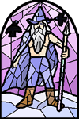
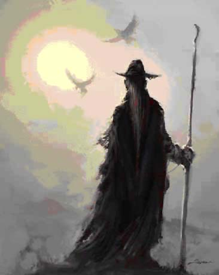
Господар на Асгард, върховен бог на скандинавския пантеон. Той
бил надарен със свръхчовешки качества, което обаче не му пречело да събира мъдрост и знания отвсякъде.
Один канел във Валхала загиналите в битка храбри войни, а там им прислужвали Валкириите - девици-войни.
Один често пътешествал всред хората, наблюдавал ги и ги съветвал. В миг на просветление, той разкрил
на азите, ваните, гномите, гигантите и хората смисъла на руните. На плещите му стояли гарваните Хугин
и Мунин, а в нозете му лежали вълците Гери и Фреки. Хугин и Мунин летели над цялата земя през деня, а
Гери и Фреки я обикаляли през нощта и след това разказвали на господаря си какво са видяли и чули. Один
носел на главата си крилат, златен шлем, а в ръката си държал копието Гунгнир, което не пропускало никога
целта. Конят му Слейпнир, бил с осем крака и можел да препуска по земята, водата и въздуха. Господарят на
света обикалял земята, яздейки жребеца си и невидим за хората, участвал в сраженията им, като помагал на
по-достойните да победят. В Рагнарок (Залеза на боговете), вълкът Фенрир убил Один, но преди това той
забил копието си Гунгнир в гърдите му.
СИФ
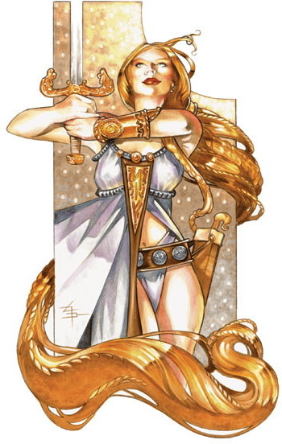
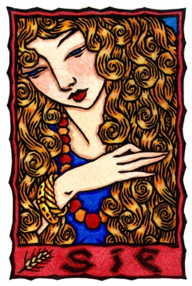
Богиня на плодородието, жена на Тор. По красота Сиф отстъпвала само на
Фрея, но коси като нейните, нямал никой, защото били направени от златото на гномите.
ТОР
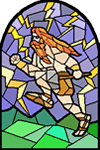
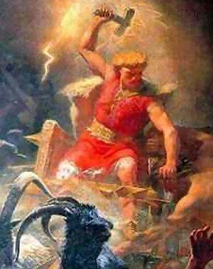
Бог на гърмотевиците, син на Один и богинята на земята Йорд. Тор е
висок, мускулест и червенокос. След Один, Тор е считан за най-могъщия бог. Още като дете, той поразявал
всички със силата и мощта си. Не бил така мъдър, като баща си, но затова пък нямало по-силен от него в
целия свят, а подвизите му били неизброими. Тор препускал по небето в своята, обкована с желязо колесница,
впрегната в двата козела Тангниостр и Тангриснир. Те били по-бързи от вятъра и даже по-бързи от Слейпнир -
жребеца на Один. Тор притежавал вълшебен пояс, който увеличавал двойно силата му. На ръцете си носел железни
ръкавици, а вместо копие, меч или лък, използвал тежкия железен чук Мьолнер, с който можел да разбива и
най-здравите скали. Тор рядко оставал в Асгард, защото дни и нощи се сражавал с великаните. Но когато над
азите надвисвала опасност, било достатъчно да произнесат името му и той веднага се явявал на помощ. В дните
на Рагнарок (Залезът на боговете), Тор убил с чука си вселенския змей Йормунганд, но след като отстъпил девет
крачки, паднал поразен от отровата му.
ТИР
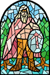
Бог на войната, син на Один и сестрата на морски великан. След Один,
Тир бил трети по значение всред азите и най-храбрият бог. Той имал само лява ръка, защото загубил дясната,
спасявайки боговете от гигантския вълк Фенрир. Това обаче, не му пречело да бъде изкусен войн и да участва
във всички сражения. Тир е един от дванадесетте главни богове. В дните на Рагнарок (Залезът на боговете),
той и вълкът Гарм се убили взаимно.
ФРИГ
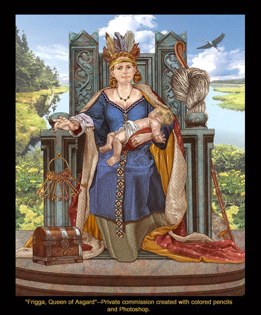
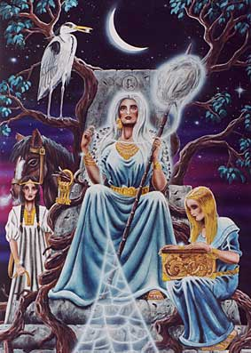
Богиня на брака, семейството, жена на Один. Тя е господарка на живеещите
в Асгард богини. Тя била толкова мъдра, колкото и нейния мъж. Подобно на Один, Фриг често се спускала на земята
и предрешена бродела всред хората, слушайки за мъките и грижите им.
ХОД (ХОДЕР)
Наречен Слепият бог, син на Один. Той обладавал огромна сила, но
никога не напускал Асгард и рядко излизал от двореца си. Ход е един от дванадесетте главни богове.
Заради убийството на Балдер, бил убит от Вали. След Рагнарок (Залезът на боговете), той и Балдер успяват
да се измъкнат от разрушения подземен свят и помагат да се построи новия свят.
ХЕЙМДАЛ
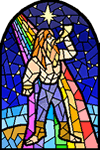
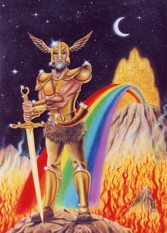
Наречен Мъдрият бог, син на Один. Страж на моста-дъга Бифрост - входа
към Асгард. Хеймдал спял малко, виждал всичко на сто дни път във всяка посока и можел да чуе как расте тревата.
Той имал рог, наречен Гялар и когато го надуел, звукът му се чувал по целия свят. Хеймдал е един от дванадесетте
главни богове. В дните на Рагнарок (Залезът на боговете), той и главния му враг Локи се убили с копията си.